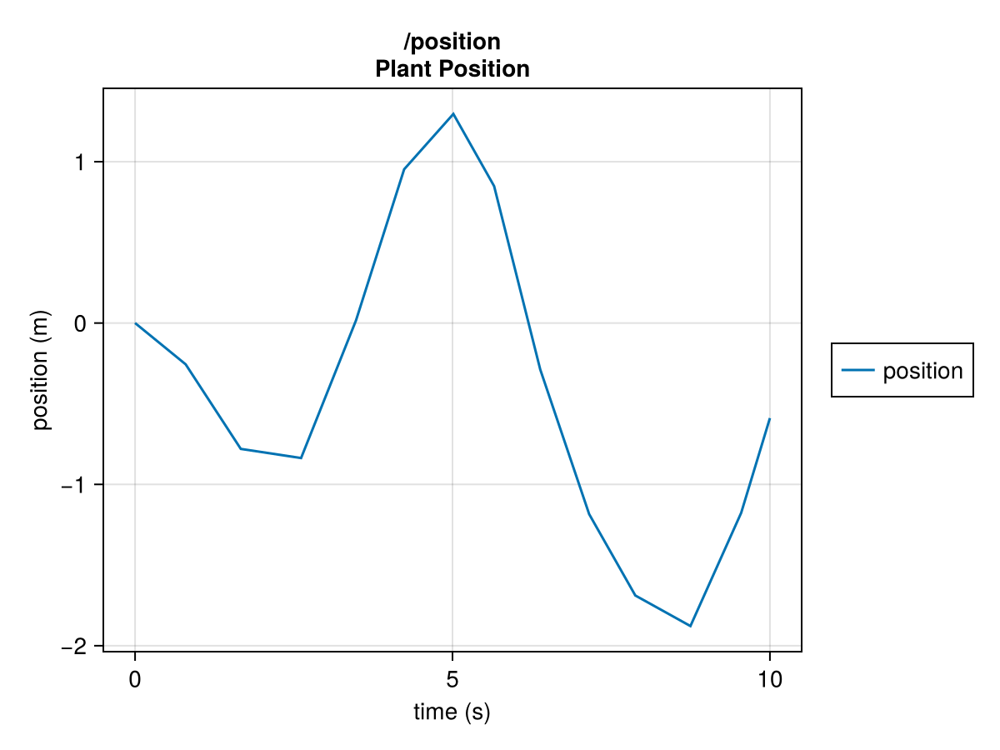
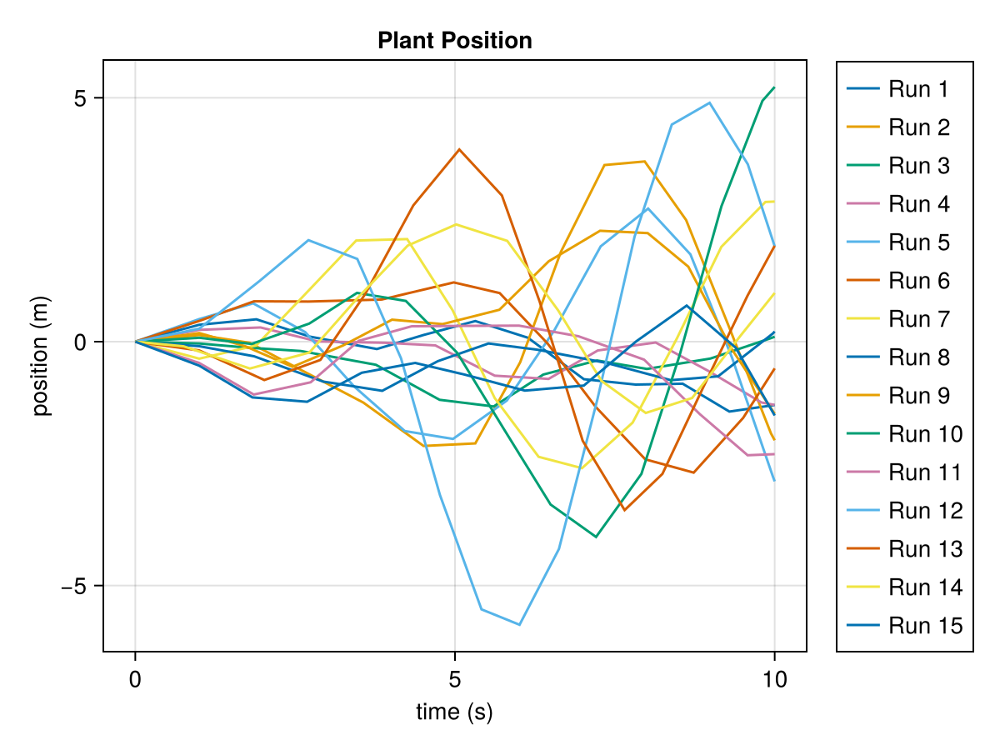
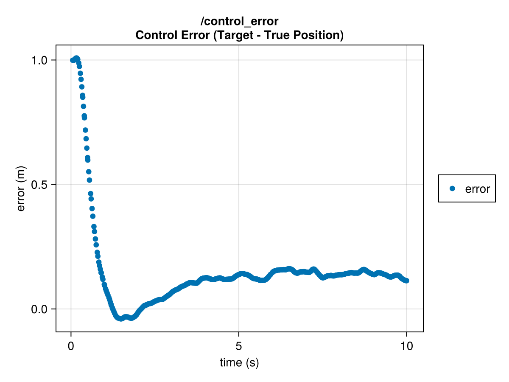
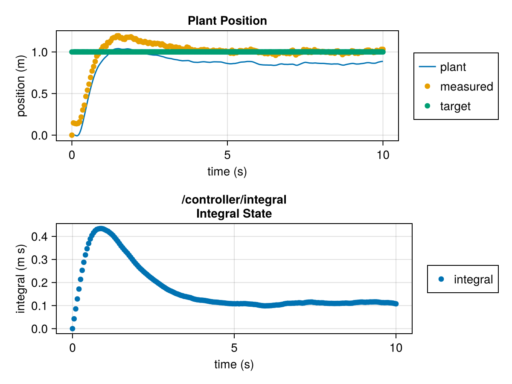
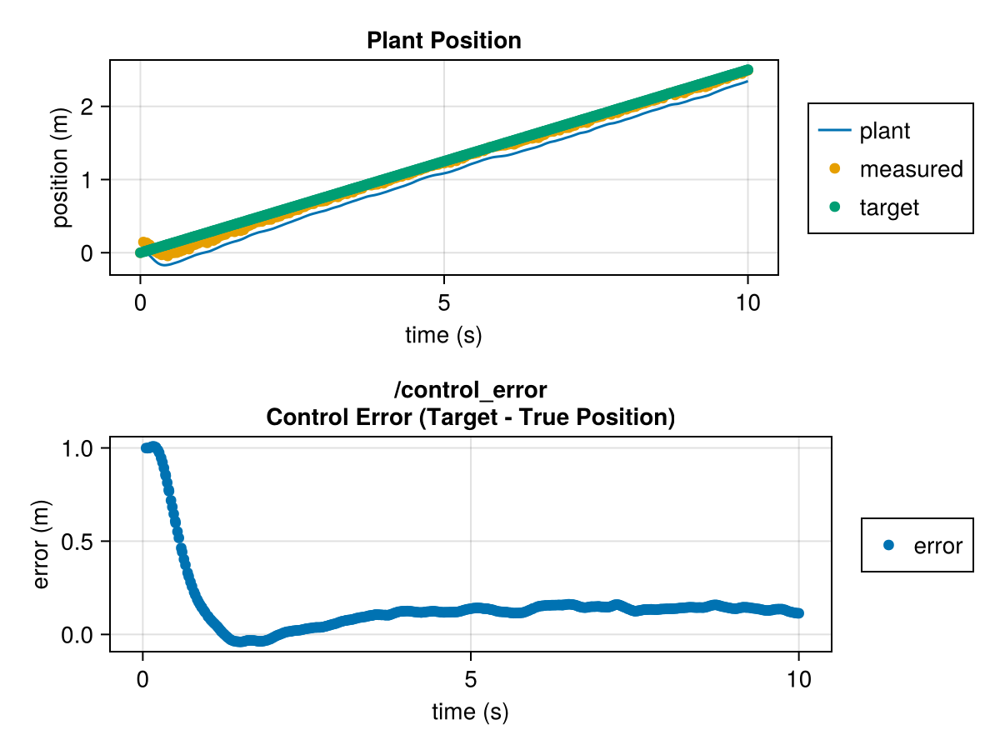

Control System Example
In this example, we're going to develop a closed-loop control system that features:
- A "plant", the system whose dynamics we want to control
- A sensor that makes noisy measurements of the plant
- An actuator that provides an input to the plant
- A target generator that produces the target state we want to drive the plant to
- A control system that uses the sensor and sends commands to the actuator to drive the plant to the target state
+-- Closed-Loop System ---------------------------------------------------+
| |
| +-------------+ |
| | Target | |
| | Generator | |
| +-----+-------+ |
| | |
| | Target |
| v |
| +-----+-----+ +------------+ +--------------+ |
| | Control |---Command--->| Actuator |---Input--->| Plant | |
| | System | +------------+ | (Dynamics) | |
| +-----+-----+ +------+-------+ |
| ^ | |
| | +-----------+ | |
| | | Sensor | | |
| +---------Measurement------| (Noisy) |<-------------+ |
| +-----------+ |
| |
+-------------------------------------------------------------------------+To do this, we'll see several different ways to build models using SystemsOfSystems, including:
- Continuous systems
- Discrete systems
- Random variables
- Schedules
- Models that contain sub-models
This is a working example. The outputs and plots are generated as part of building this documentation. One can copy all of this into a script and produce the exact same results.
(Quick note: Nothing about SystemsOfSystems is specific to control theory or closed-loop systems. It's simply a common simulation pattern that we can implement with a general simulation engine like SystemsOfSystems.)
Imports
Since this is a working example, we'll import everything we need up front:
import Random
import SystemsOfSystems
import Dimensions # We'll want this to label our sensor measurement
import CairoMakie # The plotting package we'll usePlant
We'll start with a very simple plant. The dynamics are as follows:
\[\ddot{x} = \frac{1}{m} \left( -x + f_a + \nu \right)\]
where $x$ is the plant state (position), $m$ is the mass, $f_a$ is the force from the actuator, and $\nu$ is white noise.
Plant Implementation
First, we want a way to parameterize this system so that we can set the constants and initial conditions. Let's make a quick type for that.
# This is how the system is parameterized.
@kwdef struct PlantSpecs
mass::Float64
initial_position::Float64
initial_velocity::Float64
sigma_noise::Float64
end
;(In case you're new to Julia, the @kwdef here creates a constructor with keyword arguments, so we can call PlantSpecs(; mass = 1., initial_position = 2., ...), etc.)
At any given moment while the plant is running in the sim, we want to be able to access its mass, position, velocity, and noise input, so let's make the "model" form:
# This contains everything the model needs while running.
@kwdef struct Plant
mass::Float64
position::Float64
velocity::Float64
noise::Float64
end
;We need a function that tells the sim what constants, states, and random variables our model should have, as well as any other outputs we want logged. The inputs to this function will be time, our PlantSpecs from above, and a seed that we can use for random initial conditions.
# This turns the specs into a description of the model.
function init(t, specs::PlantSpecs, seed)
return SystemsOfSystems.ModelDescription(;
# This is what tells the sim to build a Plant with this stuff.
type = Plant,
# Constants we'll need while running
constants = (;
# We can describe each variable in detail for plots and human output.
mass = SystemsOfSystems.VariableDescription(
specs.mass;
title = "Mass",
dimensions = ["mass" => "kg",],
),
),
# We treat position and velocity as two state variables, since this is
# a 2nd-order system.
continuous_states = (;
position = SystemsOfSystems.VariableDescription(
specs.initial_position;
title = "Plant Position",
dimensions = ["position" => "m",],
),
velocity = SystemsOfSystems.VariableDescription(
specs.initial_velocity;
title = "Plant Velocity",
dimensions = ["velocity" => "m/s"],
)
),
# We can ask for a continuous white noise source. This will all be handled
# properly by the integrator.
continuous_random_variables = (;
noise = SystemsOfSystems.RandomVariableDescription{Float64}(
SystemsOfSystems.ContinuousWhiteNoise(specs.sigma_noise);
title = "Continuous White Noise Force Input",
dimensions = ["noise" => "N",],
seed = seed / "noise",
),
),
# Further, we have pieces that aren't part of the Plant but that are things
# we want logged as byproducts of our calculations.
continuous_outputs = (;
forces = SystemsOfSystems.VariableDescription(
0.;
title = "Total Forces on the Plant",
dimensions = ["forces" => "N",],
)
),
)
end
;This describes all of the variables that the plant cares about. (We don't need to use VariableDescription here; we could just use raw numbers/structs, but the descriptions show up nicely in plots, so we'll use them in this example.)
What about that seed / "noise" line? The seed, here is a SystemsOfSystems.BranchingSeed type, and / means "branch" (we could also call branch(seed, "noise")). When we branch a seed, it means that we spin off a new seed derived from the given seed using the given string. With branching seeds, SystemsOfSystems makes it very easy to create independent random number streams that nonetheless all change when the top-level seed changes. Basically every single random variable and every use of seed to draw during initialization should use its own unique branch. Having independent streams keeps things tidy when adding random variables or changing the order of models, etc.
The plant has only continuous-time dynamics. Let's write a function that takes in the current time, plant model, and actuator force and returns the derivatives of the state variables, plus the extra output we said we wanted logged.
# This is where we implement the model's dynamics -- functions that say how the model
# changes over time based on the inputs.
function rates(t, plant::Plant, actuator_force)
forces = -plant.position + actuator_force + plant.noise
acceleration = forces / plant.mass
return SystemsOfSystems.RatesOutput(;
rates = (; # Derivatives of our continuous states
position = plant.velocity,
velocity = acceleration,
),
outputs = (;
forces = forces,
),
)
end
;Note: We called our functions init and rates, but the names are arbitrary. We can choose whatever names we like.
Finally, other models will need the plant's position (the sensor will need it in order to take a measurement), so let's provide a function that returns the position so that the sensor model doesn't have to access the plant's state directly.
get_position(plant::Plant) = plant.positionget_position (generic function with 1 method)Plant Simulation
Before we move on with our example, we can pause here and simulate the plant by itself to make sure things are working. We'll need to do one extra thing: wrap our rates function with a function that supplies the nonexistent actuator force (0 for this example).
plant_specs = PlantSpecs(;
mass = 1.,
initial_position = 0.,
initial_velocity = 0.,
sigma_noise = 1.,
)
history = SystemsOfSystems.simulate(
plant_specs;
t = (0, 10),
init_fcn = init,
rates_fcn = (t, plant) -> rates(t, plant, 0.),
)
historySimulation History:
Stop Reason: The sim reached the specified end time of 10.0.
Model Histories:
/
Let's take a look at the time history of the root model (the plant, of course):
history["/"]ModelHistory for / with the following contents:
type: Main.Plant
constants:
mass => VariableDescription{Float64}
continuous_states:
position => TimeSeries{Vector{Float64}, Vector{Float64}, LinearInterpolation}
velocity => TimeSeries{Vector{Float64}, Vector{Float64}, LinearInterpolation}
continuous_outputs:
forces => TimeSeries{Vector{Float64}, Vector{Float64}, LinearInterpolation}
We can access the position itself as:
history["/"]["position"]14-element TimeSeries of Float64 elements
title: Plant Position
time: Float64[0.0, ... 10.0]
data: Float64[0.0, ... -0.5891770891581465]
time_dimension: "time" => "s"
dimensions:
1: "position" => "m"
path: /position
discrete: false
interpolator: LinearInterpolation
groups:
position: ["position"]
And, while we're here, let's plot it.
SystemsOfSystems.plot_ts(history["/"]["position"])
In fact, let's run 15 simulations, returning the position time series from each, and then plot them all. Here, we'll write a loop that generates an array of 15 time histories of position.
# Make an array of position histories, one for each seed.
position_histories = map(1:15) do seed
# Run the sim for this seed.
history = SystemsOfSystems.simulate(
plant_specs;
t = (0, 10),
init_fcn = init,
rates_fcn = (t, plant) -> rates(t, plant, 0.),
seed = seed,
)
# Pull out the position history. Also, give it a label for
# the plot.
return "Run $seed" => history["/"]["position"]
end
# Plot all of those as separate lines with the given labels.
SystemsOfSystems.plot_ts(position_histories)
We can see the sinusoidal motion we'd expect from a system like this, driven by noise. At this point, we can have some faith that our plant model is doing what we intend. Let's continue with the remaining systems.
Sensor
The sensor will be a discrete system, with discrete state and discrete noise. It will also be triggered at a regular rate. Here's how we can implement that.
We start with the specifications (options, parameters, whatever).
@kwdef struct SensorSpecs
schedule::SystemsOfSystems.RegularSchedule # Defines the sample period
sigma_noise::Float64 # Standard deviation of noise to add to the measurement
sigma_bias::Float64 # Standard deviation of the measurement bias
endMain.SensorSpecsThe sensor will produce a specific structured type, so let's implement that type.
struct SensorMeasurement
t::Float64 # Time at which measurement was made
position::Float64 # The measured position (with noise and bias in it)
endThe measurement itself will be stateful. Once the measurement is generated, it will be held constant until the next measurement is made. Hence, the measurement is part of the Sensor model:
# Everything the sensor needs while running.
@kwdef struct Sensor
schedule::SystemsOfSystems.RegularSchedule
bias::Float64 # Constant
noise::Float64 # A random input on each step
measurement::SensorMeasurement # The most recent measurement
endMain.SensorLet's put together the initialization function and model description.
# Describe all of the variables in the sensor model, with their initial conditions.
function init(t, specs::SensorSpecs, seed)
# Draw the bias. Here we see branching again to create this random
# number generator.
rng = Random.Xoshiro(seed / "bias")
bias = specs.sigma_bias * Random.randn(rng)
return SystemsOfSystems.ModelDescription(;
type = Sensor,
constants = (;
bias = SystemsOfSystems.VariableDescription(
bias;
title = "Sensor Bias",
dimensions = ["bias" => "m",],
),
),
discrete_random_variables = (;
noise = SystemsOfSystems.RandomVariableDescription{Float64}(
SystemsOfSystems.DiscreteWhiteNoise(specs.sigma_noise);
title = "Measurement Noise",
dimensions = ["noise" => "m",],
seed = seed / "noise",
),
),
discrete_states = (;
measurement = SystemsOfSystems.VariableDescription(
SensorMeasurement(0., 0.);
title = "Sensor Measurement",
dimensions = ["time" => "s", "position" => "m",],
)
),
schedules = (;
# Tell the sim that this sensor needs a step on exactly its sample times.
schedule = SystemsOfSystems.VariableDescription(
specs.schedule;
title = "Sensor Measurement Schedule",
dimensions = ["period" => "s",],
),
),
)
endinit (generic function with 2 methods)Since we're using the SensorMeasurement struct as a state and want to plot that state, we need to tell SystemsOfSystems how to break it down into individual dimensions (the different lines in the plot). SystemsOfSystems looks to the Dimensions package for this behavior, so we use Dimensions.dimstyle to say that SensorMeasurement has two dimensions: its two fields, a very normal interpretation of "dimensions" for a struct.
# This helps the plotting make sense of this structured type. It will automatically be able
# to plot SensorMeasurements over time thanks to this little function.
Dimensions.dimstyle(::Type{SensorMeasurement}) = Dimensions.StructDimensionStyle()Let's provide a function so that other models can ask the sensor for its measurement at a given time.
# Given the time and true position, this returns the most recent measurement.
# When it's time for a new measurement, it will make one. Otherwise, it will
# return the prior measurement (its `measurement` state).
function get_measurement(t, sensor::Sensor, true_position)
# Our schedule triggers at t = 0, period, 2 * period, 3 * period, etc.
if SystemsOfSystems.is_triggering(sensor.schedule, t)
return SensorMeasurement(t, true_position + sensor.noise + sensor.bias)
else
return sensor.measurement
end
endget_measurement (generic function with 1 method)Now we specify the discrete dynamics. This is very simple. When the schedule triggers, we record the new measurement. Otherwise, we do nothing. The measurement will be an input to this function. It will be generated with the above function. We'll see how this all comes together in the closed-loop top model that routes everything together.
# This says how the discrete states update on this sample.
function updates(t, sensor::Sensor, meas)
# Only update when triggering.
SystemsOfSystems.on_triggering(sensor.schedule, t) do
return SystemsOfSystems.UpdatesOutput(;
updates = (;
measurement = meas, # Record our measurement (it's stateful).
),
)
end
endupdates (generic function with 1 method)Actuator
On the other side of the plant is the actuator. That model is both continuous and discrete. Its discrete state is the incoming command from the controller. Its continuous state is its response to that command. We'll allow this to be a simple first-order system.
The pattern of writing a model's specifications and "model form" should be familiar by now. There's nothing new here, so we'll write a bit more all at once:
@kwdef struct ActuatorSpecs
time_constant::Float64
initial_command::Float64
initial_response::Float64
end
@kwdef struct Actuator
time_constant::Float64
command::Float64
response::Float64
end
function init(t, specs::ActuatorSpecs, seed)
return SystemsOfSystems.ModelDescription(;
type = Actuator,
constants = (;
time_constant = SystemsOfSystems.VariableDescription(
specs.time_constant;
title = "First-Order Actuator Response Time Constant",
dimensions = ["time_constant" => "s"]
),
),
continuous_states = (;
response = SystemsOfSystems.VariableDescription(
specs.initial_response;
title = "First-Order Actuator Response",
dimensions = ["response" => ""],
),
),
discrete_states = (;
command = SystemsOfSystems.VariableDescription(
specs.initial_command;
title = "Actuator Command",
dimensions = ["command" => ""],
),
),
)
end
# For the continuous-time dynamics, the response rises to the command.
function rates(t, actuator::Actuator)
return SystemsOfSystems.RatesOutput(;
rates = (;
response = 1/actuator.time_constant * (actuator.command - actuator.response),
),
)
end
# For the discrete-time dynamics, this records its command as a state that it will use
# throughout its continuous-time dynamics. (We don't use a sample period here. We assume
# this updates on _any_ sample.)
function updates(t, actuator::Actuator, command)
return SystemsOfSystems.UpdatesOutput(;
updates = (;
command = command,
),
)
end
# An accessor that other models can use:
get_actuator_response(t, actuator) = actuator.responseget_actuator_response (generic function with 1 method)Target
Before we write the controller, let's make something that generates the target that the controller will track.
We'll start with a simple target generator: a constant target.
@kwdef struct ConstantTargetSpecs
constant_position::Float64
end
@kwdef struct ConstantTarget
constant_position::Float64
end
# Since the target for this model is stateless, let's log it as an output.
function init(t, specs::ConstantTargetSpecs, seed)
return SystemsOfSystems.ModelDescription(;
type = ConstantTarget,
constants = (;
constant_position = SystemsOfSystems.VariableDescription(
specs.constant_position;
title = "Target Position",
dimensions = ["target" => "m",],
),
),
discrete_outputs = (;
target = SystemsOfSystems.VariableDescription(
specs.constant_position;
title = "Target Position",
dimensions = ["target" => "m",],
),
),
)
end
function updates(t, target::ConstantTarget, target_position)
return SystemsOfSystems.UpdatesOutput(;
outputs = (;
target = target_position,
),
)
end
get_target_position(t, target::ConstantTarget) = target.constant_positionget_target_position (generic function with 1 method)Controller
Now we can integrate all of these systems with the controller. We'll use a typical PID for this.
@kwdef struct PIDControllerSpecs
schedule::SystemsOfSystems.RegularSchedule
k_p::Float64 # Proportional gain
k_i::Float64 # Integral gain
k_d::Float64 # Derivative gain
initial_position::Float64 # Initial value of position state
initial_command::Float64 # Initial command output
initial_integral::Float64
end
@kwdef struct PIDController
schedule::SystemsOfSystems.RegularSchedule
k_p::Float64 # Proportional gain
k_i::Float64 # Integral gain
k_d::Float64 # Derivative gain
position::Float64 # Last position measurement
command::Float64 # Last command output
integral::Float64
end
function init(t, specs::PIDControllerSpecs, seed)
return SystemsOfSystems.ModelDescription(;
type = PIDController,
constants = (;
k_p = SystemsOfSystems.VariableDescription(
specs.k_p;
title = "Position Gain",
dimensions = ["p" => "N / m",],
),
k_i = SystemsOfSystems.VariableDescription(
specs.k_i;
title = "Integral Gain",
dimensions = ["i" => "N / (m s)",],
),
k_d = SystemsOfSystems.VariableDescription(
specs.k_d;
title = "Velocity Gain",
dimensions = ["d" => "N / (m/s)",],
),
),
discrete_states = (;
position = SystemsOfSystems.VariableDescription(
specs.initial_position;
title = "Position State",
dimensions = ["position" => "m",],
),
command = SystemsOfSystems.VariableDescription(
specs.initial_command;
title = "Command State",
dimensions = ["command" => "N",],
),
integral = SystemsOfSystems.VariableDescription(
specs.initial_integral;
title = "Integral State",
dimensions = ["integral" => "m s",],
),
),
schedules = (;
# Tell the sim that this controller acts at a regular interval.
schedule = SystemsOfSystems.VariableDescription(
specs.schedule;
title = "Controller Schedule",
dimensions = ["period" => "s",],
),
),
)
end
# Returns a fresh command or holds the last one.
function get_command(t, controller::PIDController, target_position, meas)
if SystemsOfSystems.is_triggering(controller.schedule, t)
# Divide the difference between the current and last measured
# position to get an approximation of velocity.
dt = controller.schedule.period
velocity = (meas.position - controller.position) / dt
# Now make the command from the three different parts.
position_error = target_position - meas.position
command = (
controller.k_p * position_error
+ controller.k_i * controller.integral
- controller.k_d * velocity
)
return command
else
return controller.command
end
end
# Record the most recent command, position measurement, and integral as states.
function updates(t, controller::PIDController, target, measurement, command)
SystemsOfSystems.on_triggering(controller.schedule, t) do
# Update the integral.
dt = controller.schedule.period
integral = controller.integral + (target - measurement.position) * dt
# Record the command, latest measurement, and updated integral.
return SystemsOfSystems.UpdatesOutput(;
updates = (;
command = command,
position = measurement.position,
integral = integral,
),
)
end
endupdates (generic function with 4 methods)Closed-Loop System
Finally, we're ready to bring all of those systems together, essentially routing from one to the other. The closed-loop system will be the top-level system in our simulation (it will have no inputs from outside or outputs going to anything else). It will also have no state. Its only job is to contain/route the sub-models.
The specifications for a closed-loop system are simply the set of specifications for the sub-models.
@kwdef struct ClosedLoopSystemSpecs
plant # Specs for the plant model
sensor # and for the sensor model
actuator # etc.
target
controller
endMain.ClosedLoopSystemSpecsWe don't specify types for the above because there's no point, and because we might want to swap out one model type for another compatible model type.
Similarly, the "model form" itself just holds the other model forms.
@kwdef struct ClosedLoopSystem
plant
sensor
actuator
target
controller
endMain.ClosedLoopSystemInitializing this model merely consists of initializing the sub-models. We'll also declare one output variable: the control error.
function init(t, specs::ClosedLoopSystemSpecs, seed)
# Initialize each submodel, as well as this model's own outputs.
return SystemsOfSystems.ModelDescription(;
type = ClosedLoopSystem,
models = (;
plant = init(t, specs.plant, seed / "plant"),
sensor = init(t, specs.sensor, seed / "sensor"),
target = init(t, specs.target, seed / "target"),
controller = init(t, specs.controller, seed / "controller"),
actuator = init(t, specs.actuator, seed / "actuator"),
),
discrete_outputs = (;
control_error = SystemsOfSystems.VariableDescription{Float64}(
missing;
title = "Control Error (Target - True Position)",
dimensions = ["error" => "m",],
),
),
)
endinit (generic function with 6 methods)There is no control_error on the initial sample; hence, we have a missing there, and we declare that this will, when it's available, be a Float64.
Note that we branch the seed here for each sub-model. This means that, if the plant and sensor both take draws, they won't be taking the same draws, and their draws won't interact with each other. They will have totally separate (but predictable) streams.
Just like the init function, the job of this model's rates function is to gather up the RatesOutput for each of its sub-models. The plant's rates function depends on the actuator force input, so we get that from the actuator. Now, finally, we start to see where we use those accessors we made.
function rates(t, system::ClosedLoopSystem)
# Calculate the things we'll need for the dynamics.
actuator_force = get_actuator_response(t, system.actuator)
# Run the continuous-time dynamics.
return SystemsOfSystems.RatesOutput(;
models = (;
plant = rates(t, system.plant, actuator_force),
actuator = rates(t, system.actuator),
),
)
endrates (generic function with 3 methods)The updates function involves more routing, using our remaining accessors.
# This specifies how the discrete process unfolds and allows all submodels to say how they
# should update on this sample.
function updates(t, system::ClosedLoopSystem)
# Here, we figure out everything that happens on this step, and then, below, we let each
# model describe how that turns into its update.
# First, measure the sensor.
true_position = get_position(system.plant)
meas = get_measurement(t, system.sensor, true_position)
# Now figure out the command from the controller to the actuator.
target_position = get_target_position(t, system.target)
command = get_command(t, system.controller, target_position, meas)
# This is the only model that knows both the target and the true position, so we'll
# build the error signal here.
control_error = target_position - true_position
# Now that we have everything necessary to update the models, let them describe their
# updates.
return SystemsOfSystems.UpdatesOutput(;
models = (;
sensor = updates(t, system.sensor, meas),
target = updates(t, system.target, target_position),
controller = updates(t, system.controller, target_position, meas, command),
actuator = updates(t, system.actuator, command),
),
outputs = (;
control_error,
),
)
endupdates (generic function with 5 methods)Simulation
Now we're ready to simulate the complete system.
system_specs = ClosedLoopSystemSpecs(
plant = PlantSpecs(
mass = 1.,
initial_position = 0.,
initial_velocity = 0.,
sigma_noise = 0.1,
),
sensor = SensorSpecs(
schedule = SystemsOfSystems.RegularSchedule(0.05),
sigma_noise = 0.01,
sigma_bias = 0.1,
),
target = ConstantTargetSpecs(
constant_position = 1.,
),
controller = PIDControllerSpecs(
schedule = SystemsOfSystems.RegularSchedule(0.05),
k_p = 11.,
k_i = 8.,
k_d = 6.,
initial_position = 0.,
initial_command = 0.,
initial_integral = 0.,
),
actuator = ActuatorSpecs(
time_constant = 0.04,
initial_command = 0.,
initial_response = 0.,
),
)
history = SystemsOfSystems.simulate(
system_specs;
t = (0, 10),
init_fcn = init,
rates_fcn = rates,
updates_fcn = updates,
)
historySimulation History:
Stop Reason: The sim reached the specified end time of 10.0.
Model Histories:
/
/actuator
/controller
/plant
/sensor
/target
Let's see if we're driving down the control error.
SystemsOfSystems.plot_ts(history["/"]["control_error"])
Note that this is the true control error, the target position minus the true position. There's a steady-state offset because our sensor has a bias.
Let's make a more involved plot. Let's plot the target position, measured position, and true position all together, and let's put the integral term beneath it.
SystemsOfSystems.plot_ts(
[
[
"plant" => history["/plant"]["position"],
"measured" => history["/controller"]["position"],
"target" => history["/target"]["target"],
],
history["/controller"]["integral"]
]
)
Clearly, the controller is driving the measurement to the target; that's all this simple controller can really do in this situation.
The performance certainly appears to be correct.
Note the difference between lines for continuous-time variables and points for discrete variables.
Let's take a look at history.model, the complete model form at the end of the simulation:
dump(history.model)Main.ClosedLoopSystem
plant: Main.Plant
mass: Float64 1.0
position: Float64 0.8865297323754656
velocity: Float64 -0.002843116664117566
noise: Float64 0.5333615068519652
sensor: Main.Sensor
schedule: RegularSchedule
period: Rational{Int64}
num: Int64 1
den: Int64 20
bias: Float64 0.14133402616487242
noise: Float64 0.0032644838085590473
measurement: Main.SensorMeasurement
t: Float64 10.0
position: Float64 1.031128242348897
actuator: Main.Actuator
time_constant: Float64 0.04
command: Float64 0.55984925610036
response: Float64 -0.9049393126306825
target: Main.ConstantTarget
constant_position: Float64 1.0
controller: Main.PIDController
schedule: RegularSchedule
period: Rational{Int64}
num: Int64 1
den: Int64 20
k_p: Float64 11.0
k_i: Float64 8.0
k_d: Float64 6.0
position: Float64 1.031128242348897
command: Float64 0.55984925610036
integral: Float64 0.10768788176946861In there, we see the sensor bias that results in the steady-state bias of the result.
We could continue to explore our results using plots and the REPL.
Swapping Models
A lot of the power of SystemsOfSystems comes from being able to swap one model for another. Let's give that a try by developing a RampTarget that has the same interface as the ConstantTarget. Then, we ought to be able to just use our new type in our ClosedLoopSystemSpecs.
@kwdef struct RampTargetSpecs
slope::Float64
end
@kwdef struct RampTarget
slope::Float64
end
# Since the target for this model is stateless, let's log it as an output.
function init(t, specs::RampTargetSpecs, seed)
return SystemsOfSystems.ModelDescription(;
type = RampTarget,
constants = (;
slope = SystemsOfSystems.VariableDescription(
specs.slope;
title = "Slope",
dimensions = ["slope" => "m / s",],
),
),
discrete_outputs = (;
target = SystemsOfSystems.VariableDescription(
specs.slope * t;
title = "Target Position",
dimensions = ["target" => "m",],
),
),
)
end
function updates(t, target::RampTarget, target_position)
return SystemsOfSystems.UpdatesOutput(;
outputs = (;
target = target_position,
),
)
end
get_target_position(t, target::RampTarget) = target.slope * tget_target_position (generic function with 2 methods)Now let's run a sim, reusing everythinng from our last system_specs but using the new target.
ramp_system_specs = ClosedLoopSystemSpecs(
plant = system_specs.plant,
sensor = system_specs.sensor,
target = RampTargetSpecs(; slope = 0.25),
controller = system_specs.controller,
actuator = system_specs.actuator,
)
ramp_history = SystemsOfSystems.simulate(
ramp_system_specs;
t = (0, 10),
init_fcn = init,
rates_fcn = rates,
updates_fcn = updates,
)
SystemsOfSystems.plot_ts(
[
[
"plant" => ramp_history["/plant"]["position"],
"measured" => ramp_history["/controller"]["position"],
"target" => ramp_history["/target"]["target"],
],
history["/"]["control_error"],
]
)
Nothing in this section introduces anything new in SystemsOfSystems. It's simply an example of a useful design pattern in the systems-of-systems space. By designing careful, explicit interfaces for different models, one can create excellently re-usable, composable systems, allowing simulations to grow quite large without getting bogged down in code complexity.
Next Steps
This example certainly has a lot that we could add. Next, we could make a new controller that observes the rate of change of the target input, or we could add a disturbance input to the plant that starts at some trigger time, or we could break the controller into sub-models so that new controllers could be built from common pieces. And we could quickly put together Monte-Carlo runs for different targets and different initial conditions. For now, however, we'll wrap up this introductory example.
Please see the other sections for more on modeling features, simulation options, how to build a model without actually running a simulation, and how time is handled in the simulation.